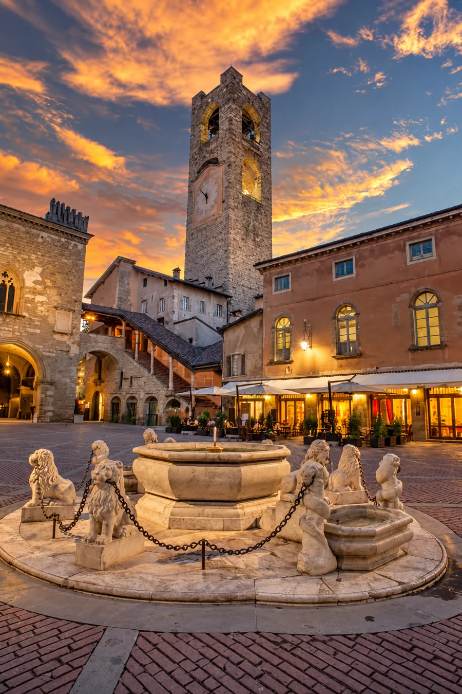
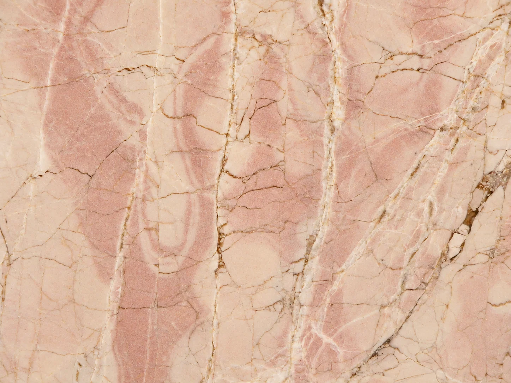

Geologia, petrografia, cave e impieghi architettonici: un percorso di ricerca attraverso cinque gruppi di materiali e testimonianze storiche.
Rocce e architetture del territorio bergamasco
Le pietre della Bergamasca testimoniano l'evoluzione geologica del territorio e l'incontro tra risorse naturali, tecniche estrattive e cultura architettonica. Questa sezione raccoglie sintesi delle ricerche scientifiche e contributi bibliografici, distinguendo i dati pubblicati dalle osservazioni non ancora edite.
Le cinque schede comprendono ora fotografie introduttive e, dove disponibili, immagini di approfondimento. I contenuti saranno progressivamente ampliati con bibliografia completa e risultati scientifici documentati.

Piazza Vecchia, Bergamo Città Alta: architetture storiche e materiali lapidei in opera.
SCHEDA 01 / PIETRE DELLA BERGAMASCA
Le pietre di Bergamo Città Alta
Pietre da costruzione e materiali ornamentali dell’architettura storica
Le architetture di Città Alta costituiscono un repertorio di materiali litici di provenienza e caratteristiche diverse. La lettura delle murature, degli apparati decorativi e delle superfici lapidee permette di confrontare proprietà petrografiche, durabilità e scelte costruttive nel corso dei secoli. La scheda esamina l’identificazione dei materiali e la relazione con i contesti estrattivi.
Marmo Arabescato Orobico: tessitura ornamentale e alternanze cromatiche.
SCHEDA 02 / PIETRE DELLA BERGAMASCA
Il Marmo Arabescato Orobico
Breccia carbonatica ornamentale delle Prealpi bergamasche
L’Arabescato Orobico è una pietra ornamentale carbonatica caratterizzata da una struttura brecciata e da marcate variazioni cromatiche. Il suo studio integra stratigrafia, petrografia delle rocce carbonatiche, varietà commerciali e impieghi ornamentali. La ricerca pubblicata sull’Arabescato Orobico costituisce un riferimento per l’interpretazione delle sue caratteristiche geologiche e tecnologiche.
Arabescato Orobico: ulteriore campione di confronto.

Marmo rosa di Zandobbio: particolare macroscopico della superficie ornamentale.
SCHEDA 03 / PIETRE DELLA BERGAMASCA
Il Marmo di Zandobbio
Pietra storica tra caratteristiche geologiche e patrimonio costruito
Il cosiddetto Marmo di Zandobbio è una roccia carbonatica nota per il suo impiego come pietra ornamentale e da costruzione. La sezione affronta tessitura, colore, caratteristiche fisiche e storia d’uso, distinguendo la denominazione commerciale dall’inquadramento geologico e petrografico. Saranno integrati gli studi sulle proprietà meccaniche e sulla conservazione delle superfici lapidee.
Pietra di Sarnico a grana fine: campione macroscopico con scala metrica.
SCHEDA 04 / PIETRE DELLA BERGAMASCA
La Pietra di Sarnico
Arenaria e tradizione costruttiva
La Pietra di Sarnico è una pietra arenacea tradizionalmente impiegata nell’edilizia e nelle architetture del territorio. L’analisi petrografica consente di esaminarne composizione, granulometria, cementazione e caratteristiche tecnologiche. La documentazione storica degli impieghi completa il quadro dei rapporti tra geologia locale e lavorazione della pietra.
Santuario di Lovere: veduta d’insieme delle colonne e dell’apparato decorativo.
SCHEDA 05 / PIETRE DELLA BERGAMASCA
Le colonne del Santuario di Lovere
Un caso di studio sulla provenienza delle pietre ornamentali
Le colonne del Santuario di Lovere rappresentano un caso di studio che collega osservazione architettonica e identificazione petrografica. Il confronto tra caratteristiche macroscopiche, dati analitici e fonti storiche contribuisce allo studio della provenienza dei materiali e della loro scelta nel progetto architettonico. I risultati saranno presentati distinguendo le attribuzioni verificate dalle ipotesi ancora oggetto d’indagine.
Documentazione fotografica: immagini selezionate per le cinque schede. L’identificazione petrografica dei materiali raffigurati negli edifici richiede verifiche puntuali; la veduta di un monumento non implica che sia realizzato interamente nella pietra oggetto di studio.